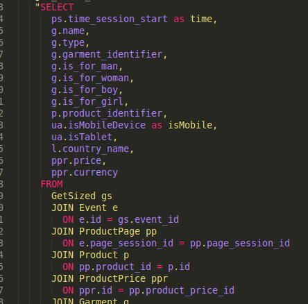
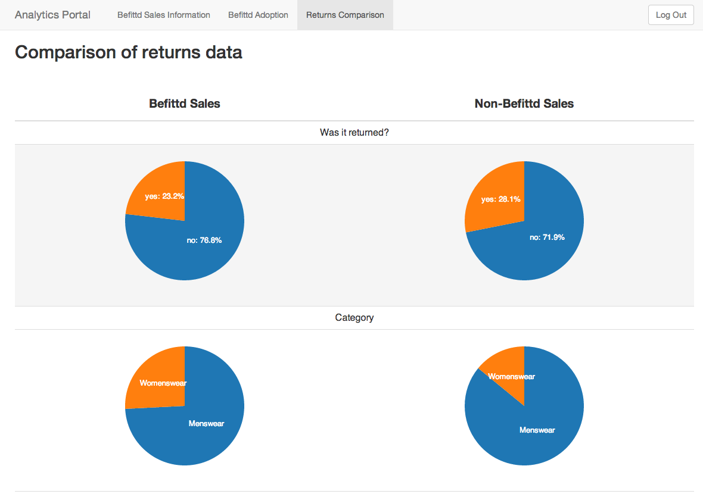
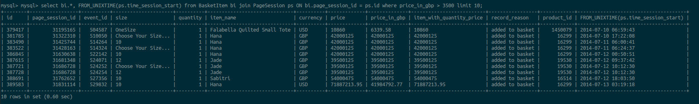
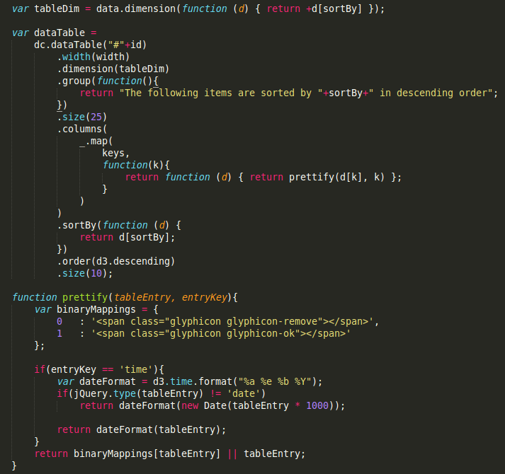

Data is the sh*t
Our experience with data visualisation
Created by Lorenzo Paoliani / @lorenzopaoliani and Jenny Lee
We collect a lot of data at Befittd
A LOT.
especially if you don't speak this absurd language
I didn't speak this language
Keyword: didn't
the Analytics Portal
Demo
Feedback for our customers.
Broken Data
feedback for us
Data
+
visualisation
i don't speak this language either
The Next Step
Report Picker
Demo
Does Befittd increase sales? Does Befittd reduce returns? (No, I cannot just say yes)
I have to make them say yes
What can we do to increase those statistics?
Time and effort vs possible gains
The
3
hardest lessons I have learnt
(press the down key).
1.
You're probably wrong.
All the time.
2.
Working with your own code is easy-peasy-lemon-squeezy.
Working within an existing code-base is difficult-difficult-lemon-difficult.
3.
It's not “How do I do this?” it's “What should this do?”
my internship in 1 comic

credit xkcd
“You'll probably end up making coffee.”
- Someone who is no longer my friend
Thanks!